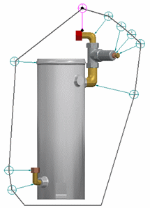
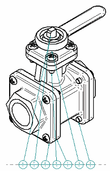
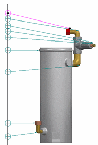
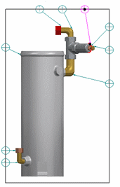

Balloon tab
You can use the options on the Balloon tab when creating a parts list for a part view of a model or when creating a block table from blocks. Some options are available only for parts lists and some are available only for block tables.
- Text Size
-
Sets the size of the text in the balloon.
- Height
-
Specifies the height of the balloon as a ratio of the balloon text size. The actual height of the balloon is the value you enter multiplied by the balloon text size.
- Shape
-
Specifies the balloon shape to use.
Note:If you select Oblong or Rectangle , the balloon will stretch to fit the text.
- Number of sides
-
Sets the number of sides of a polygon balloon shape. You must select Polygon in the balloon Shape list to use this option. You can then type the value you want for number of sides.
- Use Item Number for upper text
-
Specifies whether automatically-assigned item numbers are displayed in the top part of balloons.
- Use Item Count for lower text
-
Specifies that you want to add the part quantity value to the bottom half of the balloon.
- Upper
-
Specifies text for the top half of the balloon.
You can type alphanumeric information in this box instead of having the item number inserted automatically by the Use Item Number for Upper Text option.
- Lower
-
Specifies text for the bottom half of the balloon.
When you type text in the Lower box, a horizontal dividing line is added to the balloon automatically. This option is not available when Use Item Count for Lower Text is checked.
- Prefix
-
Specifies prefix information to display before the balloon.
- Suffix
-
Specifies suffix information to display after the balloon.
- Parts List Quantity Property Text
-
This option is available only for parts lists.
Inserts %{Parts List Quantity|G} to extract the parts list quantity into the balloon text. This is inserted at the current cursor location in the Upper, Lower, Prefix, or Suffix box.
For underline balloon shapes, which do not have a designated box to display the item count, you can use the Parts List Quantity Property Text option to insert the item count in the Prefix or Suffix of the underline balloon.
 Property Text
Property Text-
Opens the Select Property Text dialog box.
To learn how to assign property text to a balloon label, see the Help topic, Show document properties in balloons.
- Auto-Balloon
-
You can choose one of these options to provide a level of control over how many duplicate balloons are created by Auto-Balloon
 .
.- All occurrences
-
Displays a balloon for every occurrence of an item in the drawing view, or for every occurrence of an item in the selected set of blocks.
This option may result in multiple, duplicate balloons.
- One occurrence
-
Use this option to reduce the number of duplicate balloons in complex drawings or in models where parts are reused.
For parts lists, displays a single balloon for each item number in the drawing view where an item occurs. No balloon is shown more than once per drawing view.
For block part tables, displays a single balloon on the first occurrence of an item in the selected set of blocks. This results in one balloon per item number.
- One occurrence in this document
-
For parts lists, Displays a single balloon for each item in the model, regardless of the number of drawing views where an item occurs.
Use this option to eliminate duplicate balloons.
This option is available only for parts lists.
- Create alignment shape
-
This option applies only to balloons generated automatically when using the Auto-Balloon option on the command bar. It specifies that you want to create an alignment shape based on the shape type selected from the Pattern list. The auto-balloons are arranged automatically using the shape as a guide.
- Pattern
-
Specifies the shape type to create. You should select the alignment pattern that most closely matches the way you want to have the auto-balloons arranged.
An outline of the model shape is the default option.
Shape type
Example
Outline

Top

Bottom

Left

Right

Rectangle

- Order
-
Specifies the order in which item balloons are arranged using the selected alignment shape. The starting position for the first item balloon is top-left.
- None
-
This is the default option.
- Clockwise
-
Specifies that item balloons are ordered clockwise around the alignment shape.
- Counterclockwise
-
Specifies that item balloons are ordered counterclockwise around the alignment shape.
Note:The Order option is not used when you have also selected either of the following options on the Options tab (Parts List Properties dialog box):
-
Use assembly generated item numbers
-
Renumber items/balloons according to sort order
- Fastener Systems
-
The following options are available for an auto-ballooned parts list and a drawing view that shows fastener system components.
- Automatically stack balloons in the selected drawing view
-
Stacks fastener system balloons automatically using the orientation specified in the Stack alignment list. The balloons in a fastener system stack react to edits as a single entity. The default attachment point of the leader is to the lowest item number in the stack.
When deselected, fastener component balloons are displayed and manipulated as individual balloons.
- Orientation
-
Specifies a vertical or horizontal arrangement for balloon stacks created automatically for fastener system components. For a vertical stack, you can choose to arrange the balloons from top to bottom or from bottom to top. For a horizontal stack, you can choose to arrange the balloons from left to right or from right to left.
Note:You can drag one of the balloon stack edit handles to change the alignment interactively.
- Text alignment
-
Specifies center, right, or left text alignment for text displayed using the underline balloon shape and a vertical stack alignment.
To learn how to arrange balloons in a stack automatically and manually, see the Help topic, Stack balloons.